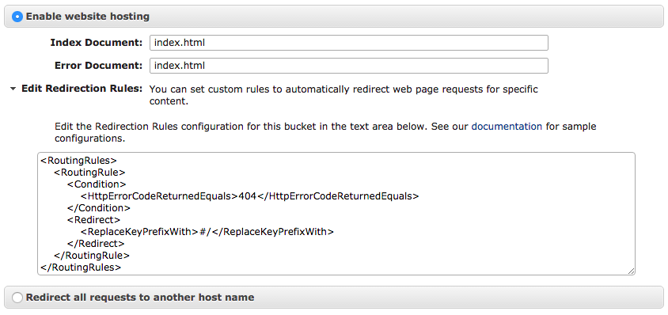

Description
We want to serve an Emberjs application using s3 static site serving capability, and have it(s3) handle internal routing properly.
End Goal

Step by step
-
Add entry documents
Index Document: index.html
Error Document: index.html
- Fix Redirection Rules for “no file found error”
<RoutingRules>
<!-- no file found error -->
<RoutingRule>
<Condition>
<HttpErrorCodeReturnedEquals>404</HttpErrorCodeReturnedEquals>
</Condition>
<Redirect>
<ReplaceKeyPrefixWith>#/</ReplaceKeyPrefixWith>
</Redirect>
</RoutingRule>
</RoutingRules>
- Provide public access to your bucket
{
"Statement": [
{
"Sid": "AllowPublicRead",
"Effect": "Allow",
"Principal": {
"AWS": "*"
},
"Action": "s3:GetObject",
"Resource": "arn:aws:s3:::<bucket-name>/*"
}
]
}
- Fix the CORS Configuration information
<!--
required if you serve your assets using the secure s3 protocol
https://s3.amazonaws.com/<bucket-name>/assets/...
-->
<?xml version="1.0" encoding="UTF-8"?>
<CORSConfiguration xmlns="http://s3.amazonaws.com/doc/2006-03-01/">
<CORSRule>
<AllowedOrigin>*.amazonaws.com</AllowedOrigin>
<AllowedMethod>GET</AllowedMethod>
<MaxAgeSeconds>3000</MaxAgeSeconds>
<AllowedHeader>*</AllowedHeader>
</CORSRule>
</CORSConfiguration>
- Set your locationType to auto
// config/environment.js
locationType: 'auto'
- Build your application
ember build --environment=production
- Upload content of the distribution folder to your s3 bucket.
# distribution folder = dist/
Now if you open the url provided to you in your s3 bucket properties, you will see your app running. Moreover, reloading the browser after visiting a new page, will bring you back to that currently visited page!